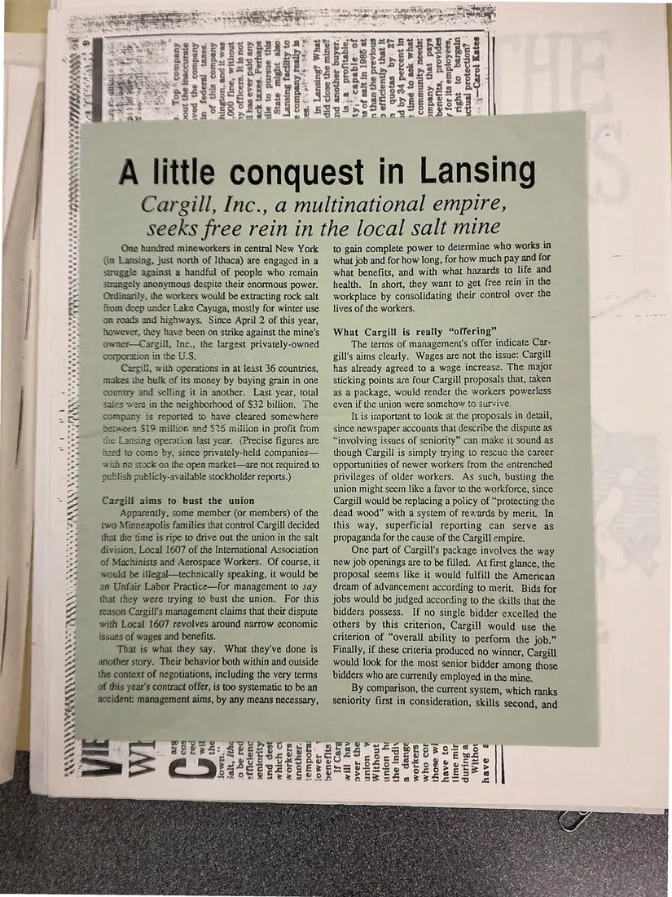
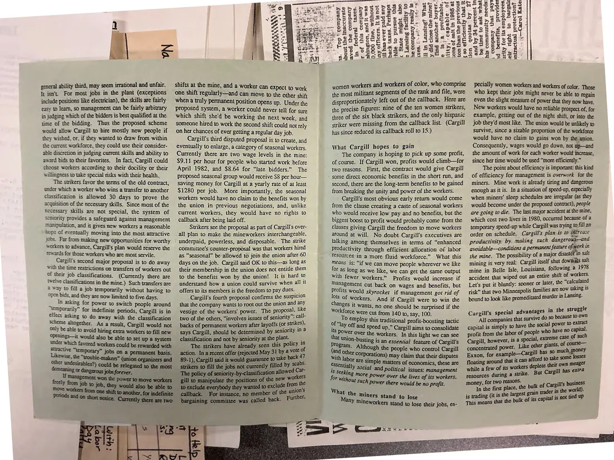
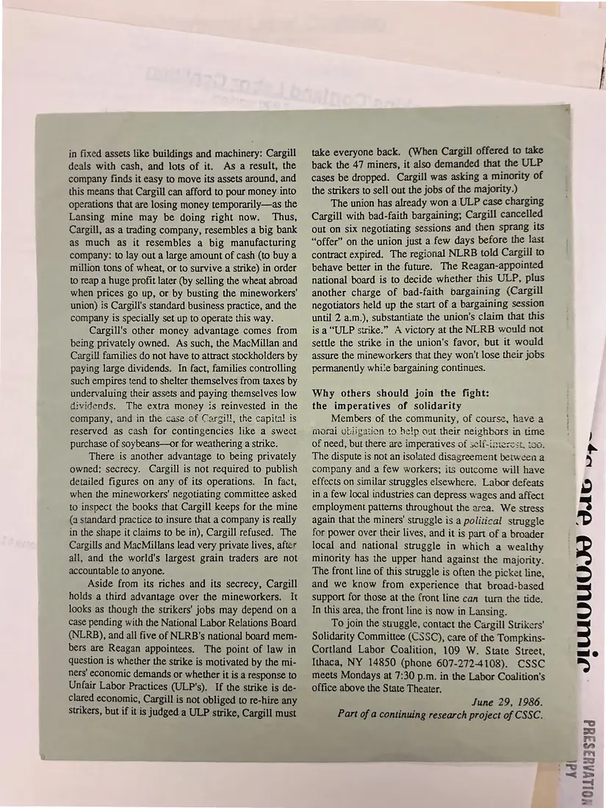

Pamphlet, 3 pages
“A little conquest in Lansing”: Cargill Strikers' Solidarity Committee pamphlet
June 29, 1986
The committee's own research on the strike: Cargill, “a multinational empire,” versus about 100 mineworkers in Lansing. It covers what management was “offering,” seniority and job classifications, the effect on women workers and workers of color, and why others should join the fight. It is signed “June 29, 1986. Part of a continuing research project of CSSC.”
Photographed back-to-front; shown here in reading order (front, inside spread, back).
Download or cite this itemPages


(open zoom view)Read the page text (machine-read, contains errors)
This text was generated automatically from the photograph and has not been corrected. The image is the authoritative record.
yee SD
Bed
Pes
3 One hundred mineworkers in central New York
- = Gn Lansing, just north of Ithaca) are engaged in a
“6 struggle against a handful of people who remain
= strangely anonymous despite their enormous power.
= Ordinarily, the workers would be extracting rock salt
Se from deep under Lake Cayuga, mosily for winter use
on roads and highways. Since April 2 of this year,
however, they have been on strike against the mine's
owner—Cargill, Inc., the largest privately-owned
corporation inthe U.S.
Cargill, with operations in at least 36 countries,
makes the bulk of its money by buying grain in one
country and selling it in another. Last year, total
saies were in the neighborhoed of $32 billion. The
company is reported to have cleared somewhere
between $19 million and $25 miiiion in profit from
the Lansing operation iast year. {Precise figures are
tard to come by, since privately-held companies—
with ne stock oa the open market—are not required to
eaee egress ae
*eoPSGG TH UMY
ar at eae eee ee
FRAN
saetayve
wer oe 9
ie publish publicly-availabie stockholder reports.)
Z Cargill aims to bust the union
mo Apparently, some member (or members) of the
Se two Minneapolis families that control Cargill decided
4 that ihe time is ripe to drive out the union in the salt
‘t= division, Local 1607 of the International Association
vo of Machinists and Aerospace Workers. Of course, it
OA would be illegal—technically speaking, it would be
‘7 av Unfair Labor Practice—for management to say
~ that they were tying to bust the union. For this
“ reason Cargill's management claims that their dispute
x with Local 1607 revolves around narrow economic
*}+ issues of wages and benefits.
oA That is what they say. What they've done is
another story. Their behavior both within and outside
the context of negotiations, including the very terms
of this year’s contract offer, is too systematic to be an
accident: management aims, by any means necessary,
SINAN
CrPyopse se.
pe oeeoe
@ soMouesS ao
J [3] we
~ SEVESSES
© oS PEee2SGo
benefits
= RAY eae ST 2 totus Seer pew Raha Over
cb es >) SR SS Se el ae hn Ses So RS
Neen ee ee eenmaaimmnmcreces.cumeimnamenmme temas ecemcacenaere rine uaseenanmenmmaesnn cece aaa 5
= PEDyESEPERAESAT Pesos BINS g Pisa 8
a Sage er ccs soeney Seog Sea ERLE EES
Ze RSP S RUE Se. rb ESS®Asa es ees z
<< ESE Espa ed eau - M2. 82 — km PaPsae rr)
== Seen e a re ekece: pus keserg hoes 6SB a:
S Paes tackpPPePwdi Eg2 sessasSh oda” BO
we Sees SER oes Seacd ug SE bier
cE B PSN Ss gcc gi ssee. Woe Geer ee ee eka
SS : SY ise SS u es Se STusas° ar} MPSSEScE
SS Fe Re CRS EE al 8 het bee ae Fea”
A little conquest in Lansing
Cargill, Inc., a multinational empire,
seeks free rein in the local salt mine
to gain complete power to determine who works in
what job and for how long, for how much pay and for
what benefits, and with what hazards to life and
health. In short, they want to get free rein in the
workplace by consolidating their control over the
lives of the workers.
What Cargill is really “offering”
The terrns of management's offer indicate Car-
gill's aims clearly. Wages are not the issue: Cargill
has already agreed to a wage increase. The major
sticking points are four Cargill proposals that, taken
as a package, would render the workers powerless
even if the union were somehow to survive,
It is important to look at the proposals in detail,
since newspaper accounts that describe the dispute as
“involving issues of seniority” can make it sound as
though Cargill is simply trying to rescue the career
opportunities of newer workers from the entrenched
privileges of older workers. As such, busting the
union might seem like a favor to the workforce, since
Cargill would be replacing a policy of “protecting the
dead wood” with a system of rewards by merit. In
this way, superficial reporting can serve as
propaganda for the cause of the Cargill empire.
One part of Cargill's package involves the way
new job openings are to be filled. At first glance, the
proposal seems like it would fulfill the American
dream of advancement according to merit. Bids for
jobs would be judged according to the skills that the
bidders possess. If no single bidder excelled the
others by this criterion, Cargill would use the
criterion of “overall ability to perform the job.”
Finally, if these criteria produced no winner, Cargill
would look for the most senior bidder among those
bidders who are currently employed in the mine.
By comparison, the current system, which ranks
seniority first in consideration, skills second, and
Withor
If Carg
will hav
over the
union ¥
Without
union hi
the indiv
a dange
workers
who cor
those wl
have to
time min
during a
have

(open zoom view)Read the page text (machine-read, mostly readable)
This text was generated automatically from the photograph and has not been corrected. The image is the authoritative record.
general ability third, may seem irrational and unfair, It isn't. For most jobs in the plant (exceptions include positions like electrician), the skills are fairly easy to Jearn, so management can be fairly arbitrary in judging which of the bidders is best qualified at the time of the bidding. Thus the proposed scheme would allow Cargill to hire mostly new people if ey wished, or, if they wanted to draw from within the current workforce, they could use their consider- able discretion in judging current skills and ability to award bids to their favorites. In fact, Cargill could choose workers according to their docility or their willingness to take special risks with their health. The strikers favor the terms of the old contract, under which a worker who wins a transfer to another classification is allowed 30 days to prove the acquisition of the necessary skills. Since most of the necessary skills are not special, the system of seniority provides a safeguard against management manipulation, and ii gives new workers a reasonable nop: of eventually moving into the most attractive jobs. Far from making new Opportunities for worthy workers to advance, Cargill's plan would reserve the rewards for those workers who are most servile. Cargill's second major proposal is to do away with the time restrictions on transfers of workers out of their job classifications. (Currently there are twelve classifications in the mine.) Such transfers are way to fill a job temporarily without having to Open bids, and they are now limited to five days. A In asking for power to switch people around ‘emporarily” for indefinite periods, Cargill is in effect asking to do away with the classification scheme aliogether. As a result, Cargill would not only be able to avoid hiring extra workers to fill new strikers to fill the jobs not currently filled by scr STOTT. a ee Sav ey SoSSHRS aS 25 8 &3 jae LEE Es beer Sr ha si wap BASR ee SIS esas” . Has ao g¢ Sica Ets pgeectiGa 5: BeuEssseace” 58°64 ¢ rst = te 2& PEPUEE LEE Ae LEPRE eee S5ysseetdoege: Saat. CREESE SSS Hom PSSau eS Fhe SIUMaGe® BU OERI EE "so ses cetsan og 555 SRegsegas 2.8 GRAS AoeaSe e245 a> o=Sse3s a ote. shifts at the mine, and a worker can expect to work one shift regularly—and can move to the other shift when a truly permanent position opens up. Under the proposed system, a worker could never tell for sure which shift she'd be working the next week, and someone hired to work the second shift could not rely on her chances of ever getting a regular day job. Cargill's third disputed proposal is to create, and eventually to enlarge, a category of seasonal workers. Currently there are two wage levels in the mine: $9.11 per hour for people who started work before April 1982, and $8.64 for “late bidders.” The proposed seasonal group would receive $8 per hour— Saving money for Cargill at a yearly rate of at least $1280 per job. More importantly, the seasonal workers would have no claim to the benefits won by the union in previous negotiations, and, unlike current workers, they would have no rights to callback after being laid off. Swikers see the proposal as part of Cargill's over- all plan to-make the mineworkers interchangeable, underpaid, powerless, and disposable. The strike committee's counter-proposal was that workers hired as “seasonal” be allowed to join the union after 60 days on the job. Cargill said OK to this—as long as their membership in the union does not entitle them to the benefits won by the union! It is hard to understand how a union could survive when all it offers to its members is the freedom to pay dues. _ Cargill's fourth proposal confirms the suspicion that the company wants to root out the union and any vestige of the workers’ power. The proposal. uke two of the others, “involves issues of seniority - call- backs of permanent workers after layoffs (or strik Sh says Cargill, should be determined by seniority in 2 classification and not by seniority atthe plant. The strikers have already seen this policy i action. In a recent offer (rejected May 31 by 4 ee 7 89-1), Cargill said it would guarantee to take bac women workers and workers of color, who comprise the most militant segments of the rank and file, were disproportionately left out of the callback. Here are the precise figures: nine of the ten women strikers, three of the six black strikers, and the only hispanic striker were missing from the callback list. (Cargill has since reduced its callback roll to 15.) pecially women workers and workers of color. Those who kept their jobs might never be able tO regain even the slight measure of power that they now have. New workers would have no reliable Prospect of, for example, getting out of the night shift, or into the job they'd most like. The union would be unlikely to survive, since a sizable proportion of the workforce would have no claim to gains won by the union. Consequently, wages would go down, not up—and the amount of work for each worker would increase, since her time would be used “more efficiently.” The point about efficiency is important: this kind of efficiency for management is overwork for the miners. Mine work is already tiring and dangerous enough as it is. In a situation of speed-up, especially when miners’ sleep schedules are irregular (as they would become under the proposed contract), people are going to die. The last major accident at the mine, which cost two lives in 1980, occurred because of a What Cargill hopes to gain The company is hoping to pick up some profit, of course. If Cargill won, profits would climb—for two reasons. First, the contract would give Cargill some direct economic benefits in the short run, and second, there are the long-term benefits to be gained from breaking the unity and power of the workers. Cargill's most obvious early return would come from the clause creating a caste of seasonal workers who would receive low pay and no benefits, but the biggest boost to profit would probably come from the : : clauses giving ast the ae to move workers _ temporary speed-up while Cargill was trying ie fill “ around at will. No doubt Cargill's executives are order on schedule. Cargill 's plan is to ier ee: talking among themselves in terms of “enhanced productivity by making such panes a Productivity through efficient allocation of labor avoidable—conditions a permanent feature of wor ie Tesources in a more fluid workforce.” What this the mine. The possibility of a major ners oR means is: “if we can move people wherever we like _ mining is very real: Cargill itself shut dow fee for as long as we like, we can get the same output mine in Belle Isle, Louisiana, dts as with fewer workers.” Profits would increase if accident that wiped out an entire oe yaa management cut back on wages and benefits, but Let's put it bluntly: sooner or later, eee Profits would skyrocket if management got rid of _ risk” that two Minneapolis families are heats lots of workers. And if Cargill were to win the _ bound to look like premeditated murder in changes it wants, no one should be surprised if the Workforce were cut from 140 to, say, 100. To employ this traditional profit-boosting tactic a ‘lay off and speed up,” Cargill aims to consolidate Power over the workers. In this light we can see Cargill's special advantages in the sare All companies that survive do so brand eons capital is simply to have the social per beets profit from the labor of people who hav i i of such ae ‘nlon-busting is an essential feature of Cargill's Cargill, however, is a special, Ser 7 Gueee Although the people who control Cargill concentrated Pores ar : nee 2 ig see with labor pate may claim that their disputes Exxon, for examp le—C. Sainte uch jp simple i ing around that it can essentially soc pAc Matters of economics, these are _ floating For without sy fesctes ial and political issues: management "8 More power over the lives of its workers, ch power there would be no profit. What the miners : Stand to lose Many minework €Ts Stand to lose their jobs, es- i meager while a few of its workers deplete Cee — resources during a strike. But Cargi , for two reasons. ‘ oe the first place, the bulk of Cargill's business


(open zoom view)Read the page text (machine-read, mostly readable)
This text was generated automatically from the photograph and has not been corrected. The image is the authoritative record.
in fixed assets like buildings and machinery: Cargill deals with cash, and lots of it. As a result, the company finds it easy to move its assets around, and this means that Cargill can afford to pour money into operations that are losing money temporarily—as the Lansing mine may be doing right now. Thus, Cargill, as a trading company, resembles a big bank as much as it resembles a big manufacturing company: to lay out a large amount of cash (to buy a million tons of wheat, or to survive a strike) in order to reap a huge profit later (by selling the wheat abroad when prices go up, or by busting the mineworkers' union) is Cargill's standard business practice, and the company is specially set up to operate this way. Cargill's other money advantage comes from being privately owned. As such, the MacMillan and Cargill families do not have to attract stockholders by paying large dividends. In fact, families controlling such empires tend to shelter themselves from taxes by undervaluing their assets and paying themselves low dividends. The extra money is reinvested in the company, and in the case of Cargill, the capital is reserved as cash for contingencies like a sweet purchase of soybeans—or for weathering a strike. There is another advantage to being privately owned: secrecy. Cargill is not required to publish detailed figures on any of its operations. In fact, when the mineworkers' negotiating committee asked to inspect the books that Cargill keeps for the mine (a standard practice to insure that a company is really in the shape it claims to be in), Cargill refused. The Cargills and MacMillans lead very private lives, after all, and the world's largest grain traders are not accountable to anyone. Aside from its riches and its secrecy, Cargill holds a third advantage over the mineworkers. It looks as though the strikers’ jobs may depend on a case pending with the National Labor Relations Board (NLRB), and all five of NLRB’s national board mem- bers are Reagan appointees. The point of law in question is whether the strike is motivated by the mi- ners’ economic demands or whether it is a response to Unfair Labor Practices (ULP’s). If the strike is de- clared economic, Cargill is not obliged to re-hire any strikers, but if it is judged a ULP strike, Cargill must take everyone back. (When Cargill offered to take back the 47 miners, it also demanded that the ULP cases be dropped. Cargill was asking a minority of the strikers to sell out the jobs of the majority.) The union has already won a ULP case charging Cargill with bad-faith bargaining; Cargill cancelled out on six negotiating sessions and then sprang its “offer” on the union just a few days before the last contract expired. The regional NLRB told Cargill to behave better in the future. The Reagan-appointed national board is to decide whether this ULP, plus another charge of bad-faith bargaining (Cargill negotiators held up the start of a bargaining session until 2 a.m.), substantiate the union's claim that this is a “ULP strike.” A victory at the NLRB would not settle the strike in the union's favor, but it would assure the mineworkers that they won't lose their jobs permanently while bargaining coritinues. Why others should join the fight: the imperatives of solidarity Members of the community, of course, have a morai obigaiion to help out their neighbors in ime f need, but there are imperatives of seli-intercsi, too. The dispute is not an isolated disagreement between 2 company and a few workers; its outcome will have effects on similar struggles elsewhere. Labor defeats in a few local industries can depress wages and affect employment patterns throughout the area. We stress again that the miners’ struggle is a political struggle for power over their lives, and it is part of a broader local and national struggle in which a wealthy minority has the upper hand against the majority. The front line of this struggle is often the picket line, and we know from experience that broad-based support for those at the front line can turn the tide. In this area, the front line is now in Lansing. To join the struggle, contact the Cargill Strikers’ Solidarity Committee (CSSC), care of the Tompkins- Cortland Labor Coalition, 109 W. State Street, Ithaca, NY 14850 (phone 607-272-4108). CSSC meets Mondays at 7:30 p.m. in the Labor Coalition's office above the State Theater. June 29, 1986. Part of a continuing research project of CSSC. hdl YOLLYA 6 JIUUOUUU J 13$34d
See something wrong, or recognize a person or event? Send a correction. If you hold rights in this item or think it should not be public, write to the same address.